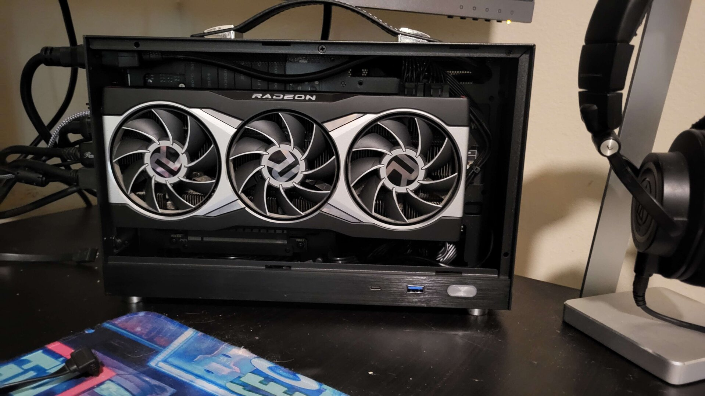
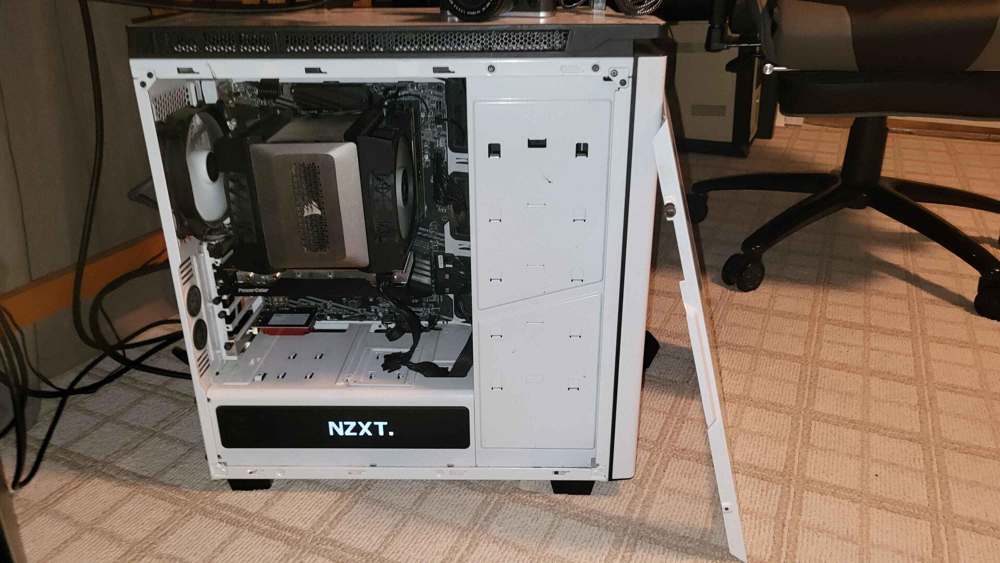
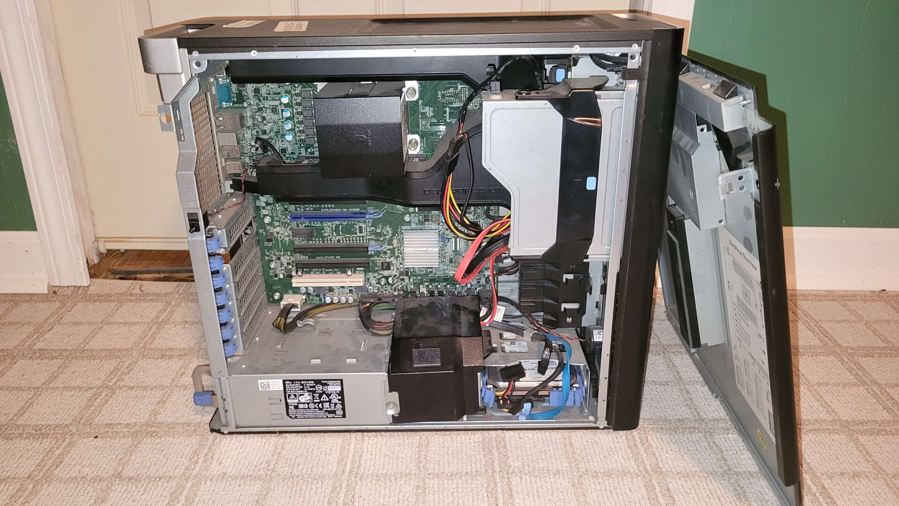

The Sleeper TrueNAS Server
Classic sleeper case exterior
Modern hardware interior
This sleeper PC combines retro aesthetics with modern performance. It features an Intel i7-1280P processor, 32GB of RAM, and five 6TB 7200 RPM drives configured in ZFS RAIDZ2 with two 1TB SSDs for caching to accelerate read speeds.
My First PC Build (2016)
Built when I was just 14 years old, this system holds special significance as my introduction to PC building. I used this setup for approximately four years before upgrading.
Main Workstation
My current daily driver is this compact ITX powerhouse featuring an AMD Ryzen 9 7950X, 32GB of DDR5 RAM, and a Radeon 6900 XT. Running Ubuntu Linux, it handles all my development work, content creation, and occasional gaming with ease.
Primary Uses
- Software development environment
- 4K video editing workstation
- High-performance computing tasks
- Linux gaming when time permits
Guest/Secondary PC
Originally my main system, this now serves as an overqualified guest PC.
Security-Focused Xeon Workstation
This specialized workstation serves as my ultra-secure cryptocurrency wallet storage. When complete, it will feature mirrored hard drives (maybe SSDs) in RAID 1 configuration for maximum redundancy. The system runs a hardened Proxmox installation and will be completely air-gapped from all networks.
Security Measures
- Complete network isolation (air-gapped)
- Physical write-protect switches for storage
- Multi-layer encryption for all sensitive data
- Custom firmware modifications